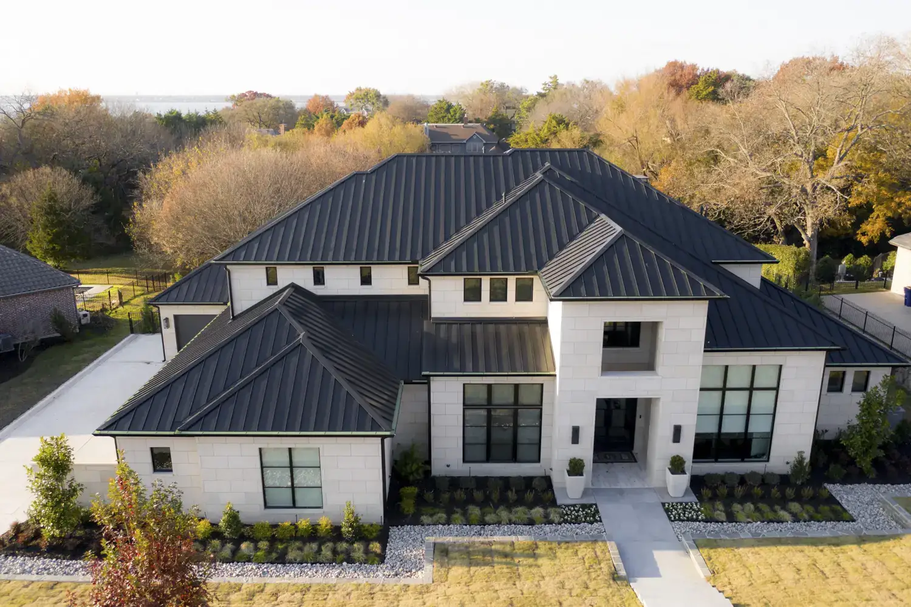
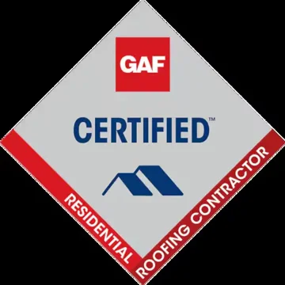
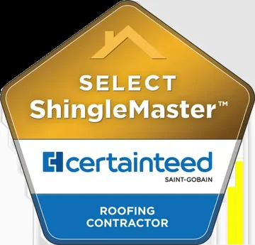
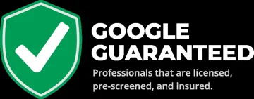
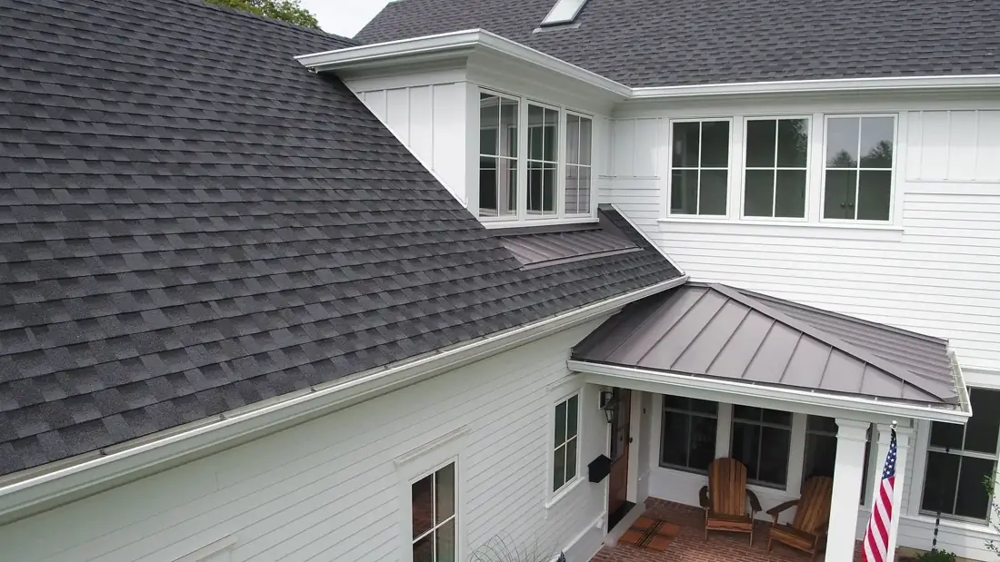
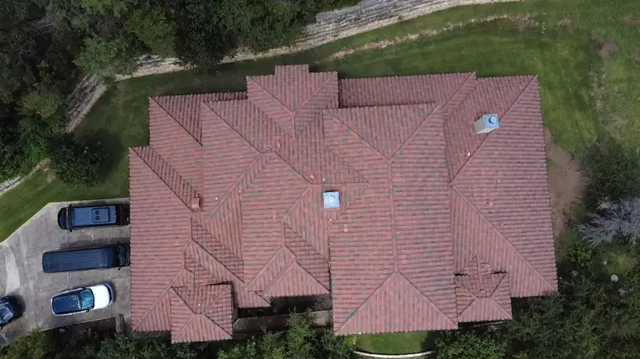
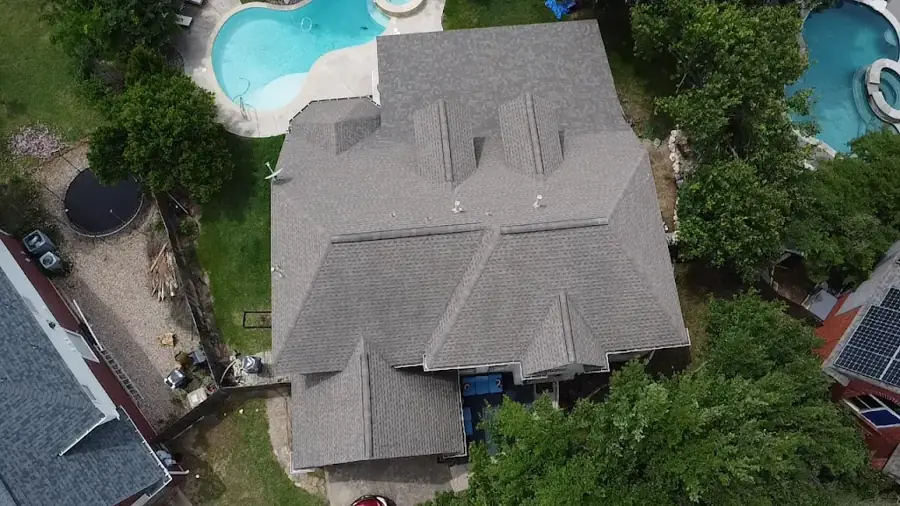
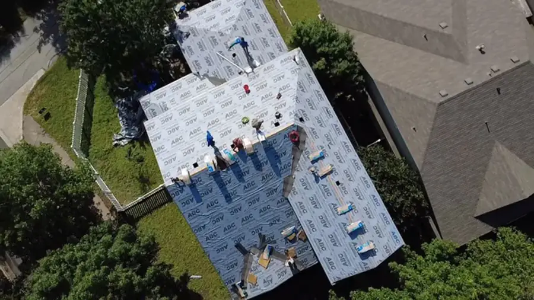
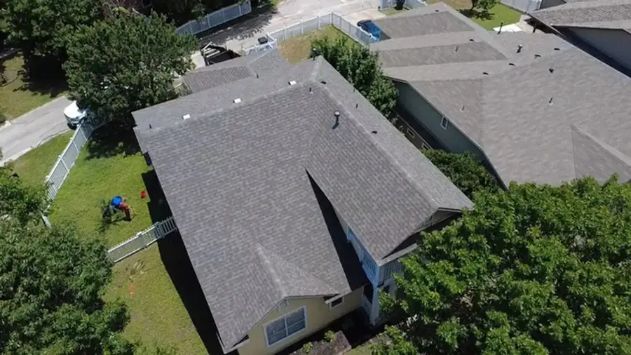
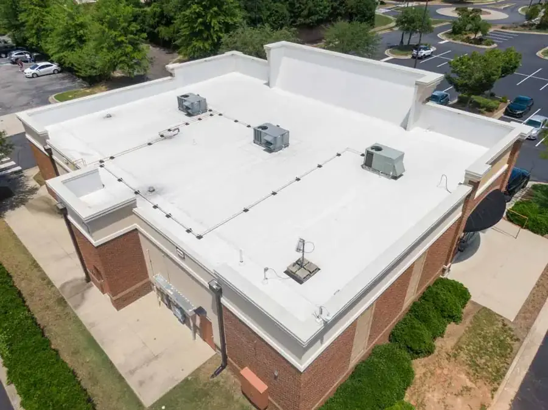

Professional Roofing Company in Austin, TX
Looking for a trusted shingle roofing company in Austin TX? At Pinnacle Roofing Partners we do more than install roofs, we handle repairs, full replacements, insurance claims, city permits, and more. Backed by lifetime workmanship warranties, premium products, and 20+ years of experience serving Austin homeowners, we deliver unmatched craftsmanship.
Get $500 off your next roof replacement. Contact our shingle roofers in Austin TX at 512-883-5068 or fill out the short form for a free inspection.
Why Choose Our Shingle Roofers Austin TX?
Our locally owned and operated roofing company is located at 8121 Bee Caves Rd, Austin, TX 78746.
Lifetime Warranties
Lifetime labor + shingle warranties on all new roofs; coverage most Austin roofing companies can't offer.
Insurance Claim Experts
We document damage, deal with insurers, and fight for the payout you're owed.
Proven Local Roofer
Premium materials and certification means leak-free repairs, despite high levels of rain in Austin last year.
Exclusive Discounts
$500 off new roof replacements. Plus special savings for veterans & first responders.
Master Craftsman
CertainTeed Master Craftsman: certified, accredited, and 5-star rated.
See Our Completed Projects for Residential Roofing Austin TX






Reviews for Our Shingle Roof Contractor in Austin
“I needed a shingle roofing company in Austin after some leaks showed up, and Pinnacle Roofing really came through for me and my wife. They took time to explain things and stuck to the timeline. Plus my roof looks great now. I would use them again.”
PonyPuppy K.Google review“The Pinnacle Roofing team did amazing from start to finish. We couldn’t be happier with their services. They made the insurance process simple, and our home looks beautiful with the new roof. Highly recommend if you are in Austin and looking for a roof replacement. Thank you Pinnacle!”
Elizabeth W.Google review“Pinnacle Roofing replaced our shingles in Brushy Creek after the hail storm. They finished ahead early and left the yard looking good. Its hard to find Austin roofers that care this much.”
S. L.Google review“Tyler(and the whole Pinnacle team) did fantastic! Made it super easy to deal with my insurance and guided me every step of the way! Thank you Pinnacle!”
Bobby P.Google review“We had a hailstorm recently and were in the market for a new roof and gutters. We reached out to Tyler and he was great to work with. He was very knowledgeable and professional from the inspection to the completion of the roof. He answered all of the questions we had about the process and kept us updated the day our roof was being done. The team showed up early, got to work quick and did an excellent job on our new roof, as well as cleaning up afterwards. Highly recommend Pinnacle Roofing to anyone needing a new roof.”
Allan T.Google review“I can highly recommend Pinnacle Roofing to everyone who is looking for a high quality service. Our roof was repaired quickly without any issues. The service was excellent. Thank you!”
Helen D.Google review“Thank you Tyler! Great job on the roof replacement from beginning to end!”
Alicia G.Google review“I’ve known Chris for a long time. Quality owner quality person no doubt the job done right with care, professionalism, and integrity.”
Robb D.Google review“I recently had Pinnacle roofing install a new roof and gutters. They showed up on time, got straight to work, and wrapped everything up ahead of schedule. The roofing crew was professional and knowledgeable, explaining the materials and process in detail. The gutters were installed with the same attention to detail. They made sure the drainage system was perfect. The team kept me updated throughout the process, which I really appreciated.”
Leonard D.Google reviewOur Shingle Roofing Services in Austin TX
Our top-notch residential roofing contractor in Austin offers a wide range of services, from small roof repair to full roof replacements. Trust Pinnacle Roofing Partners to provide the best roofing solutions for your home.
Shingle Roof Installation Austin
Our Austin Texas roofers specialize in new roof installation, ensuring completion per manufacturer specifications for best practices. We use quality materials and expert craftsmanship so your home’s roof stands strong for years to come. Discover reliable residential roof installation in Austin!
Re-Roofing
Re-roofing involves replacing old shingles and inspecting the roof structure. From flat roof replacement to standard install, if you have an old roof with signs of weather damage, we are ready to replace it with a durable, energy-efficient upgrade. Our Austin shingle roof replacement company has affordable prices and a smooth process from start to finish.
Asphalt Shingle Roof Replacement in Austin
Does your house have cracked or missing shingles? Roof replacement is recommended if the roof shows signs of wear or has been frequently repaired. Our shingle roof replacement contractor in Austin uses high-quality, long-lasting shingles and install them according to the manufacturer’s specifications for maximum longevity and durability.
Emergency Roof Repair
When severe storms hit Austin, prompt action is critical. Our 24/7 emergency roofers in Austin, TX respond immediately to secure tarps, stop active leaks, and prevent further damage. Using rapid assessments, temporary fixes, and full repairs with premium materials, hail damage roofing protects your home and guides you through the insurance claims process for peace of mind.
Storm Damage Roof Repair
Hail, high winds, and heavy rain can tear shingles, crack tiles, and leave your roof vulnerable to leaks or structural damage. If you see missing shingles, water stains, or dented flashing, our Austin shingle roof repair company repairs damaged roofs quickly and document damage for insurance to identify hidden issues so your home is protected before the next storm hits.
Asphalt Shingle Roof Repair in Austin
Our Austin shingle roof repair contractor uses a premium liquid polymer coating to seal and rejuvenate your existing roof—extending its life by 10–20 years, boosting UV and water resistance, and improving energy efficiency. Ideal for roofs with minor wear or hail damage, our cost‑effective, eco‑friendly restorations protect your Austin home without the need for a full replacement.
Austin Gutter Installation
Our Austin Tx roofers offer complete gutter services to protect your home’s roof and foundation from water damage. With professionally installed gutters, our Austin gutter contractor ensures a seamless fit and long-lasting performance with every project.
Austin Gutter Repair
Got leaks or sagging gutters? Our gutter company offers fast and reliable gutter repair services to keep your system flowing properly during heavy Texas storms in the Austin area.
Gutter Guard Installation
Upgrade your gutter system with durable gutter guards that block leaves and debris. Say goodbye to clogs and reduce the need for constant cleaning.
Skylight Install Austin TX
Brighten your home,lower your energy costs, and add value with professional skylight installation from our experienced team. Pinnacle Roofing ensures leak-free, energy-efficient results that blend beautifully with your existing roof.
Sun Tunnels
Brighten dark spaces with energy-efficient sun tunnels. A perfect upgrade for Austin homes, they bring in natural light without the high cost of full skylights. Speak with our Austin Texas residential roofing contractor for more details and start saving with lower energy costs.
Cool Roof Installation
Stay cooler in the Texas heat. Our cool roof coatings reflect sunlight and reduce attic temperatures to help lower your energy bills year-round.
Roof Inspections
Roof inspections should ideally be done at least annually to catch problems that could become costly later. You should do a comprehensive roof inspection to determine roof damage before deciding to replace your roof.
Asphalt Shingle Roof Maintenance in Austin
Our Austin Texas roofers provide preventative roof maintenance to help you avoid costly repairs down the line. With routine roof cleaning and protective roof coatings, regular maintenance can extend the life of your roof.
Roof Leak Repair Austin
By the time you notice a leak, a large amount of damage may have already occurred. It is important to contact our Austin TX roofing company right when you notice a leaky roof. It’s often not necessary to replace an entire roof; you may only need to repair a damaged section.
Roofing Materials Installed by Austin Shingle Roofers
Our team of shingle roofers Austin TX is experienced installing a wide range of roofing materials, each with its own strengths and weaknesses. Want to learn more about which material fits your home and budget? Contact Pinnacle Roofing Partners for a free, no-obligation estimate today!
Asphalt Shingle Roofing
Our asphalt shingle roofing contractors in Austin install premium three-tab and architectural shingles designed for Central Texas weather. Storm-Ready & Durable: Hail-resistant options and Class A fire rating stand up to high winds, heavy rain, and intense sun.
Energy-Efficient: UV-reflective granules help cut attic heat and lower summer cooling bills.Style & Warranty: A wide palette of colors in composition or laminate, all backed by lifetime shingle warranties.
Local Cost Factors: Installation pricing varies by roof complexity, shingle grade, and Austin-area labor rates.
Low Maintenance: Individual damaged shingles can be swapped out quickly, with only periodic cleaning required.To learn more about our asphalt shingle roof services in Austin contact Pinnacle Roofing Partners today!
Metal Roofing
For those considering a new roof upgrade, our residential metal roofing contractor in Austin TX offer standing-seam or metal-shingle systems.
Incredibley Durable: Rated to withstand 140 mph winds, severe hail, rot, insects, and wildfire exposure.
Energy Savings: Reflective finishes can cut cooling bills by up to 25% during scorching Texas summers.
Eco-Friendly: Fully recyclable at end-of-life for a sustainable roofing choice.Styles & Materials: Choose from sleek standing seam, lightweight aluminum, ultra-strong galvanized steel, or impact-resistant metal shingles—all installed by Austin-licensed crews.
Local Pricing Factors: Costs vary by metal type, roof complexity, and Austin-area labor rates.
Low Maintenance: Durable finishes and hidden fasteners mean minimal upkeep and long-term peace of mind.Ready for a durable, energy‑efficient roof? Contact Pinnacle Roofing, a trusted Austin metal roofer, for a free estimate and personalized consultation.
Cedar Shake Shingles
We provide Class A, fire-rated wood shakes for Austin homes seeking natural elegance and performance:Standout Curb Appeal: Rich wood grain and warm textures boost home value in the Austin market.
Built to Last: Treated cedar resists wind, hail, insects and rot—lasting 30–50 years with routine care.
Year-Round Comfort: Natural air pockets insulate against scorching summers and cool winters.
Eco-Friendly Choice: Renewable, biodegradable shakes from sustainably managed forests.
Luxury Upgrade: A top pick on custom and high-end Austin homes for its premium look and feel.
Simple Upkeep: Periodic cleaning, inspections, and fire-retardant treatments keep your roof in top shape.
Smart Investment: At $8–$16 per sq ft, cedar pays off in energy savings, durability and lasting beauty.
Austin-Ready: Cedar’s natural oils shed moisture and resist mold during our humid summers.
Tile Roofing
Clay or concrete tiles offer decades of performance and curb appeal.50–100 Year Lifespan: Exceptional longevity with minimal upkeep.Storm & Fire Resistant: Class A fire rating and engineered to withstand hail, high winds, and intense sun.
Energy Efficient: Thermal mass regulates indoor temperatures to cut cooling costs in hot summers.
Low Maintenance: Simple inspections and occasional tile replacements keep leaks at bay.
Design Flexibility: Choose classic clay reds, concrete neutrals, or lightweight synthetic profiles to match your Austin home’s style.
Local Cost Range: $18,000–$45,000 for most standard Austin homes, varying by material choice and roof complexity.
Pro Installation: Our roofer Austin TX handles underlayment, flashing, and structural prep to meet local codes.Whether clay or concrete, Austin homeowners trust Pinnacle Roofing Partners to boost curb appeal with premium tile roofing solutions.
Flat Roof Installation
Ideal for patios, decks, or low-slope homes:Built-Up & Modified Bitumen: Heavy-duty, foot-traffic friendly surfaces.Single-Ply Membranes (EPDM, TPO, PVC): Reflective, mold-resistant, 20–30-year lifespans.
Custom Fit: Tailored installations to meet City of Austin permit requirements.We offer expert installation and repair services for flat roof systems. Our team is experienced in working with a variety of roofing materials, including EPDM, TPO, and PVC. We provide regular maintenance and inspection services to ensure your flat roof system is functioning properly.
Our High Quality Shingle Products
From Owens Corning to CertainTeed, Austin shingle roofing partners use only the highest quality brands and manufacturers.
What to Expect: Our Roofing Process
We look forward to meeting all your roofing needs as the best roofing company in Austin Texas and surrounding areas. Here's what you can expect from us:
Initial Roofing Consultation
We employ modern roof inspections to capture precise measurements and high-resolution photos to easily review material and color options. Our Austin roofing contractor provides a free, detailed estimate tailored to your home or business.
Selecting Materials & Permits
Choose the right type of roof based on budget, durability, and Austin's climate. We handle local permit applications to ensure compliance with City of Austin building codes.
Site Preparation
We schedule work to suit Austin's seasonal weather, protect landscaping and belongings with tarps and boards, and tear off old shingles with underlayment down to the decking, repairing any damaged boards as needed.
New Roof Installation
Our Austin roofers install a layer of underlayment, including water barrier at the eaves and valleys for superior moisture protection. We lay shingles in staggered, secure rows; and install vents for proper attic ventilation, while fitting flashing around chimneys, vents, and valleys to prevent leaks.
Ongoing Support
We'll explain the completed roof with you to confirm everything meets your expectations. You'll receive both material and workmanship warranties, plus follow-up service for any touch-ups or weather-related repairs.
Shingle Roofers Austin TX FAQ
What steps should I take after a hailstorm to protect my shingle roof in Austin?
Do a quick visual check: From the ground, look for missing granules, dents in vents or gutters, and cracked shingles.
Document any property damage: Snap photos of dents, bruises, or loose shingles. You’ll need them for insurance.
Avoid DIY repairs on a wet or slick roof: Climbing up too soon can be dangerous and may make existing damage worse.Call us for a FREE professional inspection: Our Austin roofing company will:• Walk your property with a certified inspector• Identify hidden damage and hail-shedding needs• Provide a detailed report and estimateDon’t wait long! Hail damage can lead to leaks and costly repairs down the road. Contact Pinnacle Roofing Partners today at 512-883-5068 or get your free inspection now and make sure your roof is storm-ready.
Do you provide Google Guaranteed roofers near me?
Pinnacle Roofing is located at 8121 Bee Caves Rd, Austin, TX 78746, and is a Google Guaranteed local Austin roofing company providing licensed and insured roofers in Central Texas. Contact us today for $500 off your next roof replacement.
What warranties are available for residential roof installations in Austin?
Our shingle roofing services in Austin offer a lifetime workmanship warranty along with a shingle manufacture lifetime warranty. Contact Pinnacle Roofing for $500 off your new roof today!
How much does a new shingle roof cost for an Austin home?
The cost of a asphalt shingle roof in Austin is typically between $9,000 and $25,000. On average, a Central Texas homeowner can expect to spend around $15,000 for a new 2,000-square-foot roof. Speak with Pinnacle Roofing to get an exact quote and $500 off on your next roofing job.
How long should my asphalt shingle roof last in Austin?
Determining roof lifespan depends on several factors, including the roofing material, local climate conditions, and maintenance practices. Typically, shingle roofs in this area require replacement every 20-30 years with the type of material used a key indicator of roof lifespan. Individual circumstances vary, so it’s important to speak with a professional residential roofer in Austin TX to determine the best course of action.
What are the signs that it is time for a roof replacement in Central Texas?
In Austin, Texas, signs that indicate a roof replacement might be needed include damage or missing shingles, visible water damage (like stains on ceilings or walls), granule loss from shingles, a sagging roofline, and the roof being over 20 years old. Additionally, excessive moss or algae growth, cracks around roof openings, and increased energy bills can also signal roof issues.If your roof needs an upgrade, contact Pinnacle Roofing and save $500 today.
How do Austin Tx roofers help with the insurance claim?
At Pinnacle Roofing, we handle the claim process from start to finish! We meet the adjuster on site and provide detailed reporting with pictures, helping to ensure a successful claim.Applying for an insurance claim can take weeks or months after storm damage. Wind damage claims regularly affect insurance premiums. You can lose a lot by not having an Austin Texas roofer help you navigate your insurance policy to cover roof damage events. Contact Pinnacle Roofing Partners to work on your behalf and make sure you get the claim you deserve.
How to choose the best roofing companies in Austin Tx?
It is crucial to choose a contractor with a long history of quality and customer service excellence. Customer reviews on platforms like Better Business Bureau, Google, Yelp, and Facebook can provide insight into the reliability of a roofing contractor. Pinnacle Roofing Partners will provide a detailed estimate and keep the customer informed of any changes during the project. Roofers should be continuously trained in the latest roofing technologies and installation techniques. Look for the following:License & Insurance: Verify they’re licensed in Texas and carry both liability and workers’ comp coverage.
Local Experience: Choose contractors familiar with Austin’s climate, local building codes, and permit process.Warranties & Transparency: Ask Austin TX roofing contractors for clear, written warranties on materials and quality workmanship, and get detailed, itemized estimates.Hiring a trained and seasoned professional is safer and more cost-efficient than tackling roofing projects yourself. An Austin Texas roofing contractor should offer clear communication and updates throughout the project. When looking for a trusted contractor, Pinnacle Roofing Partners is the best choice for modern roofing solutions in Austin and throughout Central Texas.
Which roofing materials perform best in Austin’s climate?
Metal Roofing: Reflects heat, resists hail and fire, and lasts 40–70 years.
Architectural Asphalt Shingles: Cost-effective, wind- and hail-resistant, with a 30‑plus‑year lifespan.
Clay Tiles or Slate: Offer excellent heat resistance and longevity (50–100 years for clay; even longer for slate), though they can be heavier and pricier.Synthetic/Composite Shingles: Impact-resistant and eco-friendly, mimicking premium looks without the weight or cost.Overall, you can generally count on composition shingles that may last from 12 to 20 years, asphalt shingles 15-30 years, wood shingles 20-25 years, and metal roofs as long as 50-75 years. Speak with our roofer Austin TX to discover the best roofing material for your home.
Do I need a permit for roofing work in Austin, Tx?
The city enforces the International Residential Code (IRC) and International Building Code (IBC) with local amendments, covering ventilation, insulation, wind resistance, and Class A fire ratings. Let Pinnacle Roofing Partners help you obtain the necessary permits from the City of Austin’s Development Services Department before starting any roofing Austin TX project to ensure compliance with local codes and avoid fines.
How does Austin’s weather impact my asphalt shingle roof?
Extreme Heat: Can warp, crack, or curl asphalt shingles.Severe Storms (hail, wind, heavy rain): May dent metal, lift or crack shingles, and damage underlayment.
High Humidity: Encourages algae, moss, and mold growth, especially in shaded or debris-covered areas.Austin’s weather conditions, particularly intense heat, hailstorms, and strong winds, can significantly impact the lifespan and integrity of roofs. Regular inspections, maintenance, and choosing appropriate roofing materials are crucial for protecting homes from the damaging effects of the local climate. Speak with our professional roofing contractor in Austin TX to discuss how to protect your property with quality roofing materials and installs.
What types of shingle roofs do you offer?
Our shingle roofing contractor not only provides lifetime warranties by meeting recommended manufacture specifications, we also provide homeowners with a surplus of shingle options. Ask about our affordable asphalt roofing solutions.
Types of Shingles: Asphalt 3-Tab Shingles – Pinnacle Roofing Company’s shingle roofers in Austin, TX install durable three-tab asphalt shingles that provide reliable protection at an affordable price. Choose from a wide range of colors to match your home.Architectural Shingles – Our Austin roofing experts install premium architectural shingles that boost curb appeal and deliver long-lasting performance in Texas weather.Fiberglass Asphalt Shingles – As trusted shingle roofing contractors in Austin, TX, we offer fiberglass shingles that are lightweight, fire-resistant, and built to withstand the Texas heat.Metal Shingles (Aluminum & Steel) – Our Austin shingle roofers install aluminum and steel shingles that combine modern style with superior weather resistance for lasting protection.Rubber Synthetic Shingles – Pinnacle Roofing Company provides eco-friendly rubber shingles designed to mimic slate or wood while offering excellent impact resistance — installed by our Austin shingle roofing company.Cedar Wood Shingles / Wood Shakes – Our Austin roofing specialists install beautiful cedar wood shakes that deliver timeless charm and dependable protection for your home.Slate Tiles – For homeowners seeking a high-end finish, our shingle roofers in Austin, TX install premium slate shingles built to last for decades.Solar Shingles – Pinnacle Roofing Company’s Austin roofing experts install advanced solar shingles that protect your home while generating clean, renewable energy.For expert shingle roof installation in Austin, contact Pinnacle Roofing today to get $500 off your next roof!
Contact Our Austin Shingle Roof Installation Company For A Free Quote!
Whether you're dealing with an old roof, weather damage, or just want to boost curb appeal, our experienced team at Pinnacle Roofing is here to help. We bring decades of experience to every project, making sure your entire roof is in the best possible condition. From navigating the insurance company process to protecting your home from water damage and rising energy costs, our Austin shingle roofing experts provide reliable solutions at affordable prices.
Don't wait for small issues to become major repairs, your roof protects your entire house. Call us now at 512-883-5068 for a free estimate and get $500 off a new roof installation. Let Pinnacle handle the hard stuff so you don't have to.